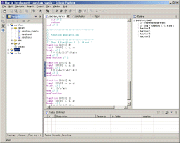

Eclipse Verilog editor
Last updated: March 28, 2004
News
The version 0.1.1 released.
It supported a new feature which is automatic port connection for instantiation.
And it fixed bugs about source code parsing for content outline view.
Introduction
Eclipse Verilog editor provides Verilog (IEEE-1364) language specific features on Eclipse IDE. It helps coding and debugging in hardware development based on Verilog.
Here is the project summary page in SourceForge.
This is a screenshot:

- These Verilog source code are from pancham project in SourceForge.
Features
- High lighting Verilog reserved words
"module", "input", "begin", "wire",
"task", "function" etc.
- Coloring comment
// single line comment
/* multi-line comment */
- Go to matching bracket
"[]", "{}", "()" and "begin/end"
Select Navigate->Go to->Matching Bracket menu.
- Contents outline view
The outline view shows module definition, module instantiation, task, function
and comment with valid sentence in a Verilog source code.
The version 0.1.1 fixed some bugs of source code parsing.
- Code template
begin/end pair, always block, function and task
Enter Ctrl+space or select Edit->Content Assist menu.
- Open declaration
Go to module declaration of selected word by searching a project hierarchy.
It is valid when you defined a same module name with file name, e.g. module
"adder" is defined in file "adder.v".
Select Navigate->Open Declaration menu.
- Automatic port connection for instantiation

Enter first character of module name which you want to instantiate.
Enter Ctrl+space or select Edit->Content Assist menu.
Select module from the list.
e.g.
If you have already defined adder.v:
module adder( a, b, sum );
input[15:0] a, b ;
output[15:0] sum ;
...
endmodule
When you enter 'a' and Ctrl+space then select 'adder', you can see this:
adder adder( .a(a), .b(b), .sum(b) );
It is more effective when you are using more complicated modules.
Install
Download net.sourceforge.veditor_0.1.1.zip and unzip.
Copy your Eclipse plugin directory.
- It is same manner with other Eclipse plug-in.
Eclipse Verilog editor is licensed by GPL.
You can also get the source code from net.sourceforge.veditor_source_0.1.1.zip
Update log
- 0.1.0
- the first release
- 0.1.1
- supported automatic port connection for instantiation
- fixed bugs about source code parsing
Future plan
- add code templates
- hierarchical view of module instantiation
- preference
- code formatter
- lint tool
- context depended code assist
- wave form view - Signals are selected from source code view
Report and comment
Please send bug report, support request and other comment to the project summary page in SourceForge.
Author
Eclipse Verilog editor is written by tadashi-k@users.sourceforge.net.
This project is hosted by